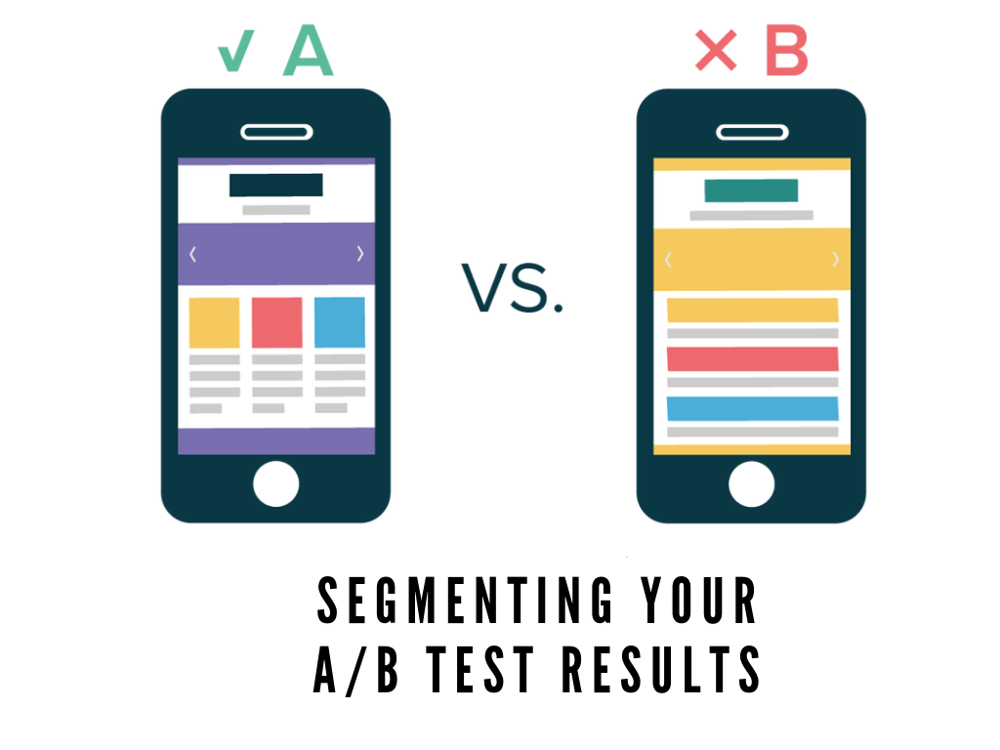
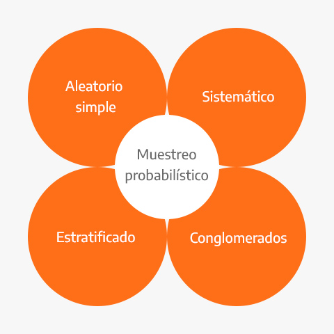
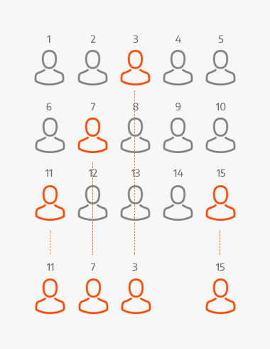
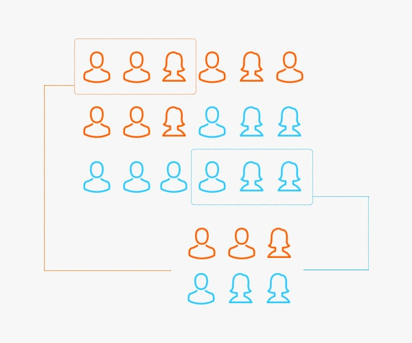

Capítulo 6 DISEÑO DE EXPERIMENTOS

6.1 Diseño de experimentos para Machine Learning
6.1.1 ¿Por qué hacer un experimento?
Diferentes segmentos de clientes pueden tener diferentes preferencias, gustos, características, etc. En cuanto a los productos ofertados por una empresa, así como la manera de ser tratados y o recompensados.
Para poder conocer los métodos que mejor funcionan en cada segmento de la población es necesario observar su respuesta ante diferentes posibes tratamientos o estímulos.
El tamaño de la población en cada grupo, así como la forma de medir los resultados debe realizarse con una metodología estadística que permita garantizar la confianza de los resultados.
Un diseño de experimentos es precisamente la aplicación del método científico para generar conocimiento acerca de un sistema o proceso.
En el diseño experimental se plantea un conjunto de pruebas documentadas de manera en que los datos recabados puedan ser analizados mediante la estadística para obtener patrones o respuestas predecibles válidas y objetivas que nos formen una conclusión efectiva.
6.1.2 A/B Testing
Uno de los métodos estadísticos más usados es: A/B Testing. Este método consiste en segmentar a la población en distintos grupos y aplicar un estímulo a los integrantes de un grupo y comparar el efecto que el estímulo genera en otro grupo al cual se le trató de manera distinta. La manera de estratificar se realiza rigurosamente mediante técnicas estadísticas.

Es una metodología de prueba de hipótesis utilizada para responder preguntas del estilo:
¿Cuál es el mejor incentivo para retener a los clientes?
¿Cuál es la mejor promoción para aumentar mis ventas en un segmento de clientes particular?
Con el fin de disminuir posibles sesgos, esta técnica requiere de manera estricta que la asignación de grupos sea realizada de manera estocástica mediante técnicas de muestreo estratificado.
6.1.3 ¿Qué es y para qué sirve muestreo?
El muestreo es el proceso de seleccionar un conjunto de individuos de una población con el fin de estudiarlos y poder caracterizar el total de la población. Nos ayuda a obtener información fiable de la población a partir de una muestra de la que extrae inferencias estadísticas con un margen de error medido en términos de probabilidades.
El aumento del uso de las técnicas de muestreo en la investigación es claro porque es un procedimiento que cuesta mucho menos dinero y consume menos tiempo. Una muestra bien seleccionada de unos cuantos miles de individuos puede representar con gran precisión una población de millones.
6.1.4 Ventajas del muestreo en el mundo corporativo
Ventajas
Reducción de costos: Los costos de un estudio serán menores si los datos de interés se pueden obtener a partir de una muestra de la población. Por ejemplo, cuando se realizan estudios de prevalencia de un evento de interés, es más económico medir una muestra representativa de 1500 sujetos de una población, que el total de individuos que la componen.
Eficiencia: Al trabajar con un número reducido de sujetos de estudio, representativos de la población; el tiempo necesario para conducir el estudio y obtener resultados y conclusiones será notoriamente menor.
Importancia
No es posible ponerse en contacto con todos los clientes, por lo que solo se incluye una muestra de esa población al realizar una investigación estadística. El supuesto es que la muestra es representativa de toda la población. Las empresas utilizan el muestreo para determinar nuevos nichos de mercado, productos, niveles de satisfacción y métodos de retención sin causar grandes pérdidas cuando el método implementado no es adecuado.
6.1.5 ¿Qué se requiere para formular un problema de muestreo?
Es requisito fundamental de una buena muestra que las características de interés que existen en la población se reflejen en la muestra de la manera más cercana posible. Esas características tienen que ver principalmente con el tamaño de la muestra y con la manera de obtenerla.
Para esto se necesitan definir los siguientes conceptos:
Población objetivo: Colección completa de todas las unidades que se quieren estudiar.
Muestra: Subconjunto de la población.
Unidad de muestreo: Objeto a ser seleccionado en la muestra que permitirá el acceso a la unidad de observación.
Unidad de observación: Objeto sobre el que finalmente se realiza la medición.
Variable de interés: Característica propia de los individuos sobre la que se realiza la inferencia para resolver los objetivos de la investigación.
En la teoría de muestreo la variable de interés no se supone como una variable aleatoria sino como una cantidad fija o una característica propia de las unidades que componen la población.
6.2 Muestreo probabilístico
El muestreo probabilístico se define como aquel en que todos los individuos de la población tienen una probabilidad de entrar a formar parte de la muestra. Los diseños en que interviene el azar producen muestras representativas la mayoría de las veces, aunque no garantizan la representatividad de la población que sometemos a estudio.
Los sistemas de muestreo probabilísticos de clasifican de la siguiente manera:

- Muestreo aleatorio simple: Se caracteriza porque cada elemento de la población tiene la misma probabilidad de ser escogido para formar parte de la muestra. Una vez censado el marco de la población, se asigna un número a cada individuo o elemento y se elige aleatoriamente
Para seleccionar una muestra de este tipo se requiere tener en forma de lista todos los elementos que integran la población investigada y utilizar tablas de números aleatorios.
Ejemplo: A un grupo de 100 personas se les numera de uno a cien y se depositan en una urna 100 canicas a su vez numeradas de uno a cien. Para obtener una muestra aleatoria simple de 20 elementos, tendríamos que sacar 20 canicas numeradas de la urna que nos seleccionarán en forma completamente aleatoria a los 20 elementos escogidos para que opinen sobre un nuevo producto.

- Muestreo sistemático: Es susceptible de ser más preciso que el muestreo aleatorio simple. Se elige un primer elemento del universo y luego se van escogiendo otros elementos igualmente espaciados a partir del primero. Consiste en dividir la población en \(n\) estratos, compuestos de \(k\) unidades.
Ejemplo: a partir de una lista de 100 establecimientos de comestibles, deseamos seleccionar una muestra probabilística de 25 tiendas. La forma de hacerlo sería:
Dividir 100 entre 25 para obtener 4 tiendas que es el salto sistemático.
Extraer un número al azar entre 1 y 4. Supóngase que es el número 3 el cual corresponde al primer elemento seleccionado.
Se incluyen en la muestra de establecimientos numerados: \(3, 7, 11, 15\)

- Muestreo estratificado: En este tipo de muestreo la población de estudio se divide en subgrupos o estratos, escogiendo posteriormente una muestra al azar de cada estrato. Esta división suele realizarse según una característica que pueda influir sobre los resultados del estudio.
Si la estratificación se realiza respecto una característica se denomina muestreo estratificado simple, y si se realiza respecto a dos o más características sedenomina muestreo estratificado compuesto.
Ejemplo: Si existen 5 millones de hipertensos en una población y hay un \(35\%\) de pacientes que fuman, podemos estratificar de manera que en nuestra muestra queden representados al igual que en el total de la población, la misma proporción de hipertensos fumadores (\(35\%\)) y de no fumadores (\(65\%\)).

- Muestreo por conglomerados: El muestreo por conglomerados nos ayuda cuando es imposible o poco práctico crear un marco de muestreo de una población objetivo debido a que está muy dispersa geográficamente y el costo de la recopilación de datos es relativamente alto. Los elementos de la población son seleccionados al azar en forma natural por agrupaciones (clusters). Los elementos del muestreo se seleccionan de la población de manera individual, uno a la vez.
La heterogeneidad del grupo es fundamental para un buen diseño del muestreo por conglomerados. Por otra parte, los elementos dentro de cada grupo debe ser tan heterogéneos como la población objetivo
Ejemplo: Una ONG quiere crear una muestra de niñas en 5 ciudades vecinas para obtener información sobre su nivel de educación.